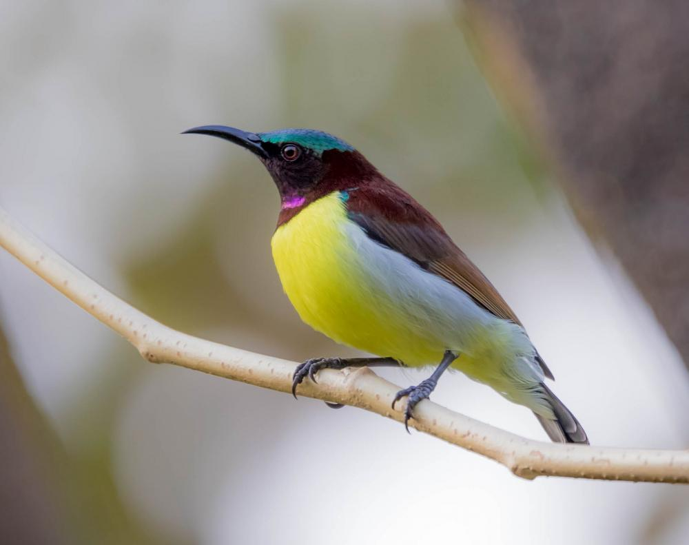

PURPLE RUMPED SUNBIRD
Average Lifespan in Wild
Average lifespan of Purple rumped sunbird is around 11 years
Common Name of The Bird
purple rumped sunbird
Scientific Name
Leptocoma zeylonica
Family
Nectariniidae

BioMetrics
Length:10 cm long, wingspan:20 cm, weight 75 gm
IUCN Red List Status
LC (Least Concern)
Current Population Trend
Stable
Food
Purple rumped sunbirds have nectar as their main diet. Although they might feed on insects especially while feeding their young ones. Thus their diet may be called omnivorous even though it mainly contains plant nectar
Call [Identification of Voice]
Their calls consist of rapid rattles followed by ringing metallic notes [ptisee ptsit or sharp twittering like tityou, trrrtit]
Identification
Males: Plumage above is dark maroon with a blue green throat and glossy, bright purple rumps. Its chest is also maroon and has green shoulder patches. Males also have yellow underparts which are flanked by white shades. Females: They re much dull as compared to their brightly coloured male counterparts. Females have an olive green back, brown wings, white throat and yellowish chest.
Geographic Distribution
Peninsular part of the Indian subcontinent and some parts of north eastern India, Sri Lanka, Bangladesh
Habitat
Found in habitats with tree including some cultivation and farming. The bird is not found in dense forests. It may be found in parts of cities with some amount of vegetation and also in agricultural areas
Breeding
They breed once a year in monsoons with two broods. Their nests are completely built by females and appear to be a bit similar to weaver bird nests. the nests are generally built with plant fibre, lichens, cobwebs and are decorated with bark pieces from trees, it is made at the end of tree branches but its entrance generally faces the tree.The incubation period ranges from 14 to 16 days.The chicks crack out of their shells in about 17 days and are fed for a few days mostly by males, but females from previous broods also help for the same.